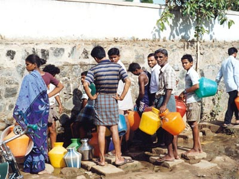
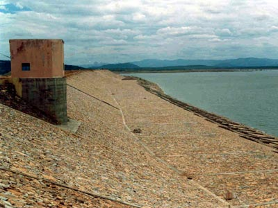
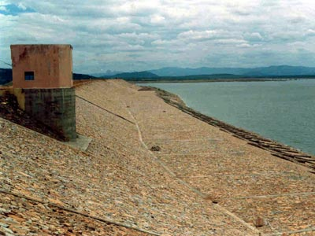
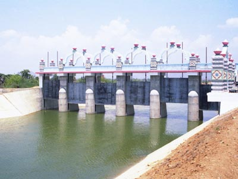

The city of Chennai, earlier known as Madras, is the largest city in South India, with a population of about six million. It was built in the early 18th century by the British colonists and was developed by them as a major port and a hub for trade and commerce. Today, it is the capital of the state of Tamil Nadu and a bustling metropolitan city attracting business investments in manufacturing sectors and also in Information Technology and Biotech areas. But up until December 2004, it was also a city with a major problem.
The city of Chennai, earlier known as Madras, is the largest city in South India, with a population of about six million. It was built in the early 18th century by the British colonists and was developed by them as a major port and a hub for trade and commerce. Today, it is the capital of the state of Tamil Nadu and a bustling metropolitan city attracting business investments in manufacturing sectors and also in Information Technology and Biotech areas. But up until December 2004, it was also a city with a major problem.
The city of Chennai lies on the east coast of India. However, it lies in the rain shadow region of the south-west monsoon and has to depend on the fickle north-east monsoon for its water supply. No major rivers flow near the city. Thus, Chennai has had to live with the problem of water shortage from way back in the late nineteenth century. In recent years the problem had become more acute with some areas of the city having to go without water supply for three days at a time during the harsh and humid summer months. The city with its teeming population required about 750 million litres of water per day and was having to make do with a mere 250 million litres. Long hours of waiting for a few litres of water at unpredictable and sometimes inconvenient hours from the community water sump seemed to be the norm everywhere in Chennai.
 In the early 1960s the Central Government announced that annually 15 TMC (thousand million cubic feet) of water from the perennial river Krishna would be brought to Madras, with the states of Andhra Pradesh, Karnataka and Maharashtra contributing 5 TMC each from their share of Krishna waters. The water from the Somasila reservoir in Srisailam district was to be taken to the Kandaleru reservoir in Nellore district and from there to the Poondi reservoir in Tamil Nadu that supplies Chennai city, by a 150 kilometre long canal.
In the early 1960s the Central Government announced that annually 15 TMC (thousand million cubic feet) of water from the perennial river Krishna would be brought to Madras, with the states of Andhra Pradesh, Karnataka and Maharashtra contributing 5 TMC each from their share of Krishna waters. The water from the Somasila reservoir in Srisailam district was to be taken to the Kandaleru reservoir in Nellore district and from there to the Poondi reservoir in Tamil Nadu that supplies Chennai city, by a 150 kilometre long canal.
 This canal connecting Kandaleru and Poondi reservoirs was called the Telugu Ganga and was completed in 1996. But, to the dismay of the residents of Chennai, of the planned 15TMC of water a measly 0.5 TMC of water was all that reached the Poondi reservoir. The reasons were manifold – evaporation, seepage and erosion of the canal walls all contributed to the reduced flow and after a few years the canal had fallen into a state of disrepair. To the despairing millions of Chennai it seemed there was no solution in sight to their problem.
This canal connecting Kandaleru and Poondi reservoirs was called the Telugu Ganga and was completed in 1996. But, to the dismay of the residents of Chennai, of the planned 15TMC of water a measly 0.5 TMC of water was all that reached the Poondi reservoir. The reasons were manifold – evaporation, seepage and erosion of the canal walls all contributed to the reduced flow and after a few years the canal had fallen into a state of disrepair. To the despairing millions of Chennai it seemed there was no solution in sight to their problem.
Till Bhagawan on 19th January 2002, on the occasion of the first anniversary of the Sri Sathya Sai Institute of Higher Medical Sciences, Whitefield, Bangalore, surprised everyone with His announcement that He had determined to resolve the plight of the thirsty millions in Chennai. He said, “Today I have made a new resolve. Madras is suffering from acute shortage of drinking water. The rich can buy water sold by tanker services, but what are the poor to do? They have been depending on rain water that has collected in puddles and ditches, thus spoiling their health. I have therefore decided to work towards bringing drinking water to Madras, no matter how difficult and costly the task is.” People wondered as to why He had chosen this occasion to make His Will known, till they realised that this day was also the anniversary of Sundaram, Bhagawan’s Mandir (temple) at Chennai!
 The project undertaken by Sri Sathya Sai Central Trust that commenced in July 2002, entailed renovation of the dilapidated Kandaleru-Poondi canal as well as enhancing the capacity of the Kandaleru reservoir. This would not only ensure adequate water supply to Chennai but also help irrigate about 3 lakh (0.3 million) acres of agricultural land in Nellore and Chittoor districts of Andhra Pradesh. With the blessings and grace of Bhagawan, the project took off at a fast pace on many fronts employing the most modern technology.
The project undertaken by Sri Sathya Sai Central Trust that commenced in July 2002, entailed renovation of the dilapidated Kandaleru-Poondi canal as well as enhancing the capacity of the Kandaleru reservoir. This would not only ensure adequate water supply to Chennai but also help irrigate about 3 lakh (0.3 million) acres of agricultural land in Nellore and Chittoor districts of Andhra Pradesh. With the blessings and grace of Bhagawan, the project took off at a fast pace on many fronts employing the most modern technology.
The project involved primarily the following works:
 
The capacity of the reservoir was increased by more than four times from 16TMC to 68TMC by revetment of sections of the dam. The revetment involved reinforcing the soil by embedding stones, which are then held together by Gabions (wire frames). This arrests erosion of the soil enhancing the life of wall sections of the reservoir. In addition to this the approach channel from the reservoir to the Kandaleru-Poondi canal, a length of 4 kilometres, was also renovated.

This canal runs for a length of about 150 kilometres. The Central Trust undertook the task of lining about 65 kilometres of vulnerable sections of the canal with concrete. The cross section of the canal was first prepared according to hydraulic principles to optimize the water flow. Then a layer of about 100 mm of concrete was poured over the bed and walls of the canal. Mechanized pavers were used to press the concrete. In certain sections, Geo-membranes made of HDPE (High Density Poly-Ethylene) sheets were placed on the canal bed to prevent seepage of water.
 Three escape structures have been constructed along the length of the canal for water to be diverted out of the canal in case of flooding. In addition to this, inspection paths and conduits to harness rainwater flowing down from hilly areas have also been constructed in certain stretches of the canal.
| SOME PROJECT STATISTICS | |
|---|---|
| Soil Excavation | 11,00,000 cubic metres |
| Hard rock excavation | 80,000 cubic metres |
| Stone masonry work | 15,000 cubic metres |
| Rough stone revetment | 30,000 cubic metres |
| Cement Concrete Guniting | 2,35,000 square metres |
| Cement Concrete Lining | 1,85,000 square metres |
About 4000 workers were employed and the work proceeded round-the-clock. The project was completed in a record time of sixteen months. The Andhra Pradesh Government, in appreciation and gratitude to Bhagawan rechristened the Kandaleru-Poondi canal from Telugu Ganga to Sathya Sai Ganga. Now it was only a matter of the reservoir at Kandaleru filling up before the water could begin the historic journey to Chennai.
Finally, on 23rd November 2004, the 79th Birthday celebrations of Bhagawan Sri Sathya Sai Baba, the gates of the Kandaleru reservoir were opened. The gurgling waters surged through the 150 kilometres to the Andhra Pradesh-Tamil Nadu border, reaching the border in a record time of four days as against the 8-10 days it used to take prior to the project. 27th November, 2004 the blessed day when the Poondi reservoir began to fill up with Sai Ganga water, happened to be Bhagawan’s birthday according to the Telugu astrological calendar!


The long-suffering residents of Chennai had finally found succour. The Lord had come to their rescue unasked, and showered His bountiful blessings on them. A few days after the release of water, on the 11th of December, devotees from Chennai gathered at Prasanthi Nilayam to express their gratitude to their Lord. Bhagawan went straight to them and asked, “Did water reach Chennai?” The devotees replied in the affirmative and thanked Him profusely. Bhagawan’s face radiated the joy and love of a thousand mothers. He said, “I am happy that water has reached My thirsty children”.
During Bhagawan's visit to Chennai in January 2007, a grand meeting was organized by the Chennai Citizens' Conclave in order to express their gratitude to Bhagawan for His munificent gift of water to Chennai through the Sathya Sai Ganga Canal. The meeting held on 21st January, 2007 in the huge Nehru Indoor Stadium at Chennai was packed with people and attended by many eminent people of Chennai including the Honourable Chief Minister of Tamil Nadu Dr. M.Karunanidhi and his entire cabinet of ministers.
Initially, Sri Sathya Sai Central Trust had undertaken the repair of the entire portion of about 154 kilometers of the canal inside Andhra Pradesh. Water flowed in full force and without any wastage through this stretch of the canal up to the state border. But repair of the stretch of about 25 kilometers of canal inside Tamil Nadu was not undertaken previously. This portion was badly damaged; earthen banks had slipped affecting proper flow of water and also leading to wastage. This deprived Chennai from deriving the full benefits of the project. Therefore, Bhagawan directed Sri Sathya Sai Central Trust to take up the work of repairing the stretch of the canal inside Tamil Nadu including Link and Feeder canal up to Red Hills Lake, where the raw water is stored, treated and supplied to the city of Chennai. The project has hence been completed.